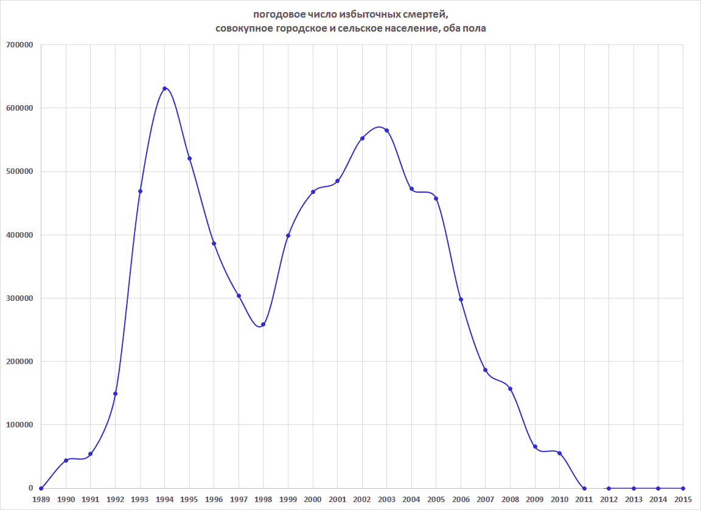
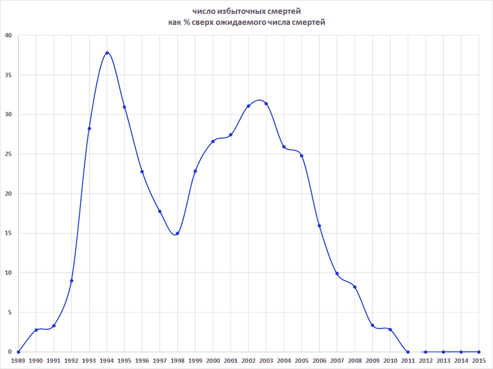
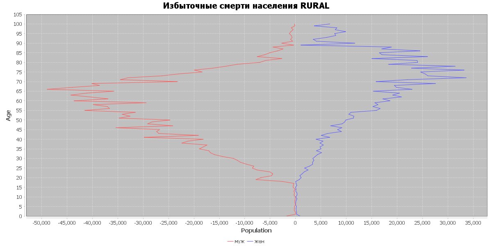
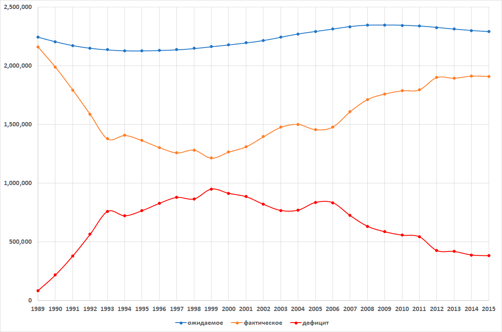

Потери народонаселения России (в границах РСФСР-1991) в 1989-2015 гг.
В 1990-х и 2000-х годах Россия понесла тяжёлый ущерб обусловленный
необольшевицкими политиками 1990-х гг., представлявшими структурный
повтор ленинистских политик 1918-1922 гг. на новом временно́м витке.1
1 Обсуждение неоленинистского
характера политик 1990-х и того, что проводившая их группировка,
самообозначившаяся кличкой "либералы", представляла ленинистскую
фракцию большевицкой номенклатуры на современном этапе её
существования, см. в нашем очерке "О двух фракциях
большевицкой номенклатуры (Циклы советской и послесоветской
истории)".
Ущерб был нанесён по всем измерениям – экономическому, социальному,
промышленному и технологическому, образовательному,
здравоохранительному, человеческого и социального капитала и др. – и
был огромен. Так, экономические разрушения даже в процентном по
отношению к ВНП измерении (не говоря про абсолютное измерение)
превосходили руину гитлеровского вторжения.
«Опустошение – потеря в ВВП – было бо́льшим, чем Россия
понесла во второй мировой войне. В период 1940-46 гг. промышленное
производство СССР упало на 24%. В период 1990-99 гг. российское
промышленное производство упало почти на 60% – даже глубже падения
ВВП (54%). Знакомые с историей предшествующего переходного периода
российской революции, в коммунизм, способны сделать
сравнения между той социо-экономической травмой и переходом после
1989 года: поголовье скота снизилось вдвое, капиталовложения в
производство практически полностью прекратились». (Joseph E.
Stiglitz, "Globalization and Its Discontents", New York and
London, стр. 143)
Специфические профессиональные проблемы возникли и у американских
планировщиков таргетирующих применение стратегического ядерного
оружия по целям на российской территории. Одной из обычно
таргетируемых категорий целей, помимо ядерных сил противника и
значимых военных объектов, являются ключевые промышленные
предприятия; в случае России, однако, экономика предстала
разгромленной "реформами" до такой степени, что таргетирование её
представлялось малоосмысленным, т.к. она и так уже пребывала в
состоянии как после атомной бомбёжки:
«Российская экономика, с учётом того, в каком состоянии она уже
находится, не представляется осмысленной целью для таргетирования
ядерным оружием». ("Future Roles of U.S. Nuclear Forces:
Implications for U.S. Strategy", RAND Corporation, отчёт MR1231,
Prepared for United States Air Force, 2003, стр. 94; https://www.rand.org/content/dam/rand/pubs/monograph_reports/2005/MR1231.pdf).
Россия также понесла колоссальный демографический ущерб.
«В последние два десятилетия Россия была охвачена
опустошительным и крайне аномальным для мирного времени
демографическим кризисом. Население страны сокращается, уровень
смертности совершенно катастрофичен, её человеческие ресурсы
опасно истощаются. Демографические курсы [...] представляют
беспрецедентное явление для урбанизированного и образованного
общества не находящегося в состоянии войны. [...] Цена
гуманитарных жертв уже безмерна, а накапливающаяся экономическая
цена угрожает быть гигантской...» (Nicholas Eberstadt, "The
Dying Bear" // Foreign Affairs, ноябрь-декабрь 2011)
В силу инерционности демографических процессов и накопляемости их
результатов, ущерб затем продолжился в 2000-х гг. и далее. В
литературе встречаются различные оценки его величины, но как правило
сделанные грубыми и неточными методами. Сложность расчёта связана с
тем, что демографический упадок России 1990-2010-х гг. был вызван
наложением двух явлений:
Возрастной структурой населения созданной предшествующими
советскими политиками, в особенностями потерями войны 1941-1945
гг.
Политиками 1990-х годов.
Поясним первый аспект. Основная доля потерь СССР в войне 1941-1945
гг. пришлась на людей 1896-1926 гг. рождения,2 в первую
очередь мужчин, которые – если б они не погибли в войне – вошли бы в
возраст 60 лет в 1956-1986 годах, и естественные смерти которых
должны были преимущественно прийтись на 1960-1970-е и начало 1980-х
годов. Этих людей не оказалось в населении 1960 – начала 1980-х гг.,
и их смерти не оказались зарегистрированы в это время, т.к. они
преждевременно умерли раньше, в 1941-1945 гг. Это создало структуру
населения СССР 1960 – начала 1980-х с искусственно заниженной долей
старшего населения, и поэтому искусственно пониженной смертностью.
После 1986 года в возраст 60+ вступили многочисленные дети
предвоенных лет рождения (1927-1940), не попавшие в 1941-1945 гг. в
армию, и значительно менее затронутые войной, чем когорты 1896-1926
гг. Доля старших возрастов в населении возросла, что неизбежно и
механически должно было привести к повышению числа смертей и общей
смертности населения независимо от того, какие политики проводились
бы в 1990-х гг.
2 См. таблицу и график
половозрастной структуры потерь от войны 1941-1945 гг. в Е.М.
Андреев, Л.Е. Дарский, Т.Л. Харькова, "Население Советского
Союза : 1922-1991", Российская академия наук, М. : Наука,
1993, стр. 78-79, а также в С.П. Обогуев, "Смертность
и рождаемость населения СССР и РСФСР в 1941-1945 годах" (https://oboguev.github.io/RTSS/ww2-losses/cdbr-194x.html).
Для точного численного определения объёма потерь вызванного именно
политиками 1990-х отдельно, а не обеими причинами совокупно,
необходимо поэтому численно вычленить влияние только второго
фактора. Между тем, почти все известные нам из литературы попытки
оценить демографический урон причинённый политиками 1990-х гг. не
проводят такого разделения, и не учитывают возрастной структуры и её
изменения со временем. Единственное известное нам исключение –
сделанная в 1996 году оценка А.Г. Вишневского, согласно которой
убыль численности населения России за 1990-1995 гг. составила 2266
тыс. чел., из которых 1398 (62%) обусловлены возрастной структурой и
были неизбежны при сохранении уровней смертности и рождаемости, а
38% индуцированы социально-экономическими политиками 1990-х гг.
ухудшившими рождаемость и смертность (А.Г. Вишневский и др.,
"Демографический потенциал России" (Аналитические обозрения Центра
комплексных социальных исследований и маркетинга. Серия
Социология, вып. 5-6), М. 1996, стр. 19-21). Вишневский однако
не обсуждает методику своего расчёта, и он доведён лишь до 1995
года. Впридачу, несмотря на то, что Вишневский был исключительно
квалифицированным демографом, именно этот его расчёт, как мы увидим
далее, ошибочен.
Настоящая статья предназначена восполнить названную лакуну и
корректным образом исчислить демографический урон России
специфически нанесённый политиками 1990-х гг. и
технико-демографически выразившийся в ухудшении половозрастных
коэффициентов смертности и возрастных коэффициентов женской
плодовитости, при надлежащем учёте половозрастной структуры
населения и её изменения со временем, и дисконтировании изменений в
смертности и рождаемости обусловленных механическим изменением
половозрастной структуры.
В избыточную смертность обусловленную политиками 1990-х гг. мы
включаем все механизмы выразившиеся в ухудшении половозрастных
коэффициентов смертности, в том числе по причинам ухудшения медицины
и здравоохранения, возросшего алкоголизма (люди пили водку не
потому, что она вкусная, а от отчаяния и беспросветности),
бандитизма, войны (в Чечне), роста насилия и преступности, стресса,
снижения уровня жизни, от ДТП и др. – т.к. изменения в этих
механизмах и каналах смертности были порождены именно
социально-экономическими политиками проводившимися в 1990-х гг.
Гипотетически, из этих механизмов
следовало бы исключить внесоциальные факторы. Как то, отчасти
исключить эпидемии (например сезонный грипп), но в
рассматриваемый период не было внезапных эпидемий, отличавших
его от опорного в нашем расчёте 1989 года. Добавочная смертность
от эпидемий носит смешанный социально-внесоциальный характер, а
в некоторых случаях (вспышки туберкулёза) преимущественно
социальный. Следовало бы также исключить влияние перемен в
регистрации причин смерти и в качестве учёта, но значительных
перемен в них тоже не было, кроме изменения в 1993 году
критериев регистрации рождений и младенческой смертности,
внесшего лишь малый вклад в общую величину смертей.
Обозрим прежде всего имеющиеся источники сведений:
1. Половозрастная и сельско-городская структура населения
РСФСР по переписи 12-19 января 1989 г.
https://www.demoscope.ru/weekly/ssp/sng_age1_89.php?reg=1
Оцифровка "Всесоюзная перепись населения 1989 года. Таблица 7с
Распределение всего населения по полу и возрасту", РГАЭ. ф.1562 оп.
69. д. 103.
Приведена с возрастным шагом 1 год по отдельности для городского и
для сельского населения и для мужского и женского пола в каждом из
населений.
Небольшая часть населения (0.6%) была переписана без указания
возраста. Мы пренебрегаем ею, т.к. невозможно указать, какие
именно значения возрастных коэффициентов смертности и плодовитости
должны к ней прилагаться.
2. База данных рождений и смертей РосБРиС
База данных по рождаемости и смертности ведётся на основе данных
получаемых от Росстата Центром демографических исследований
Российской экономической школы (Москва) и содержит наиболее
детализованные публично доступные статистические сведения о
рождаемости и смертности в России. Проект ведётся под руководством
Е.М. Андреева, одного из ведущих русских демографов. https://www.nes.ru/research-main/research-centers/demogr/demogr-fermort-data
Содержит в частности наборы данных:
Среднегодовое население по областям России для расчета
показателей смертности по однолетним группам возраста, 1989-2014
и 2015-2022 гг.
Коэффициенты смертности по возрасту и полу
Россия и регионы, однолетние возрастные группы, 1989-2014 и
2015-2022 гг.
Среднегодовое население по областям России для расчета
показателей рождаемости по однолетним группам возраста,
1989-2014 и 2015-2022 гг.
Коэффициенты рождаемости по возрасту матери
Россия и регионы, однолетние возрастные группы, 1989-2014 и
2015-2022 гг.
Россия и регионы, пятилетние возрастные группы, 1989-2014 и
2015-2022 гг.
Показатели, пересчитанные с учетом итогов переписи 2021 г.
Среднегодовое население по областям России для расчета
показателей смертности по однолетним группам возраста, 2012-2022
гг.
Коэффициенты смертности по возрасту и полу
Россия и регионы, однолетние возрастные группы, 2012-2022
гг.
Среднегодовое население по областям России для расчета
показателей рождаемости по однолетним группам возраста,
2012-2022 гг.
Коэффициенты рождаемости (женской плодовитости) по возрасту
матери (от 15 до 55)
Россия и регионы, однолетние возрастные группы, 2012-2023
гг.
Россия и регионы, пятилетние возрастные группы, 2012-2023
гг.
Под среднегодовым населением понимается "экспозиция"
вероятности/риску события (смерти или рождения ребёнка). Экспозиции
для смерти и рождения разные, т.к. для смертности событие убирает
человека из риска, и процесс моделируется как интеграл
экспоненциально убывающей функции. Рождение ребёнка не вычерпывает
экспозицию как смерть и не уменьшает численность женщин, поэтому
средняя численность женщин приближается арифметическим средним, без
экспоненциальной логики – как арифметически средняя численность, а
не интеграл выживания.
Набор данных для расчета показателей рождаемости также содержит
только женское население и только в возрастах 15...55.
Возрастные коэффициенты смертности приведены в формате mx (а не qx),
однако они могут быть преобразованы в формат qx, после чего на
основе возрастного массива qx для данного года может быть построена
таблица смертности стандартного формата .
Число смертей в каждом году может быть исчислено скалярным
произведением вектора половозрастных коэффициентов смертности mx на
вектор среднегодовой численности населения данного пола и вида
местности (записи набор DRa на соответствующие записи набора PopDa).
Число рождений в каждом году может быть исчислено скалярным
произведением возрастных коэффициентов рождаемости на среднегодовую
численность женского населения данного вида местности (набор BRa на
набор PopBa).
Загружаемые данные могут быть ограничены старой (до 2014 года)
территорией России посредством выборки по коду территории 1100.
3. Половозрастные и сельско-городские коэффициенты смертности
населения РСФСР в 1986-1987 гг.
Госкомстат СССР, "Таблицы смертности и ожидаемой продолжительности
жизни населения", 1989, стр. 237-239.
Приведены по отдельности для городского и для сельского населения и
для совокупного населения обоих видов местностей, и для мужского и
женского пола в каждом из населений.
Коэффициенты смертности приведены для возрастов 0, 1, 2, 3, 4 и
затем пятилетних групп от 5-9 до 80-84 и 85+.
Приведённые коэффициенты распакованы нами в погодовые по возрасту
величины алгоритмом PCLM.
Возможный дополнительный источник: А. Avdeev, А. Monnier,
"Mouvement de la population de la Russie 1959-1994. Tableaux
démographiques" (Données statistiques, Paris, INED, 1996 №1),
таблицы 4.3.2 и 4.3.3 (файл: p4_3d doc) приводят возрастные
коэффициенты смертности населения РСФСР и РФ для 1959-1994 гг. с
разбивкой для городского и сельского населения по внутренним
сведениям отдела естественного движения населения Госкомстата РФ, а
также материалам архивов народного хозяйства России (РГАЭ и ГАРФ) и
Центрального государственного архива в Москве.
В качестве опорного уровня для коэффициентов смертности мы, однако,
решили использовать данные из РосБРиС для 1989 года, поскольку:
Они основаны на численности населения (в знаменателе)
определённом по переписи 1989 года
В то время как коэффициенты рассчитанные ГКС для РСФСР
1986-1987 гг. используют население отсчитываемое от переписи
1979 года, с добавлением погодовых сведений о числе и
половозрастной и территориальной структуре рождений и смертей.
За 7 лет в этих сведениях, а также в данных о миграции,
накопилась погрешность.
Коэффициенты рассчитанные ГКС для РСФСР 1986-1987 гг.
приводятся в усреднённом для 5-летних групп виде. Распаковка из
5-летней агрегации в 1-годовые по возрасту величины вносит
добавочную погрешность.
Данные РосБРиС 1989 г. для смертности являются поэтому
наиболее прямыми и несут наименьшую погрешность.
4. Возрастные коэффициенты рождаемости (женской плодовитости)
во второй половине 1980-х гг. т.е. число детей рождаемых в год на 1000 женщин конкретного
возраста (от 15 до 49 лет, иногда до 15 до 54 или 55 лет).
Росстат, "Демографический ежегодник России 2010", стр. 134-136.
Приведены по отдельности для городского и для сельского населения, и
для совокупного населения обоих видов местностей.
Значения приведены для пятилетних возрастных групп от 15-19 до
45-49.
Для расчёта нами взяты усреднённые значения за 1981-1989 гг.
Возможный дополнительный источник: Avdeev, Monnier, "Mouvement
de la population de la Russie 1959-1994", таблицы А.1 (файл p5_anx
doc) и 4.2.2, 4.2.3 при учёте 4.1.2 и 4.1.3 (файл p4_12pn doc).
Следует иметь в виду, что в начале 1980-х гг. в СССР были
предприняты меры направленные на повышение рождаемости. Размер этих
мер был слишком мал, чтобы вызвать долгосрочное повышение
рождаемости и увеличение итогового количества детей в семье, но
достаточен, чтобы краткосрочно побудить к более раннему по возрасту
матери рождению. В результате часть рождений, которые произошли бы
иначе в конце 1980-х – начале 1990-х реализовались раньше времени и
переместились на середину 1980-х. Это завышает значение
коэффициентов плодовитости для 1980-х гг. сравнительно с их
долгосрочным значением и трендом, но в нашем расчёте мы не пытаемся
определить и ввести поправку на это завышение.
5. Фактическое общее погодовое число смертей в 1989-2015
гг.
Росстат, "Демографический ежегодник России 2010" (стр. 68) – для
1989 ... 2009 годов
Росстат, "Демографический ежегодник России 2019" (стр. 37) – для
1995 ... 2015 годов
Для расчёта мы используем сведения РосБРиС, которые для числа
смертей на территории 1100 (РФ в границах до 2014 года) дают
результат с высокой точностью совпадающий за 1989-2014 гг. со
сведениями Демографического ежегодника России (расхождение для
большинства лет менее 10 смертей, максимум 12 смертей).
6. Фактическое общее погодовое число рождений в 1989-2015
гг.
Росстат - Демографический ежегодник России 2010 (стр. 68) – для 1989
... 2009 годов
Росстат - Демографический ежегодник России 2019 (стр. 37) – для 1995
... 2015 годов
Данные Росстата слегка превышают данные РосБРиС, для большинства лет
в среднем примерно на 1,800 рождений в год (0.12% всех рождений),
однако для 2003-2008 гг. расхождение более значительно (около 30,000
рождений в год, 2%), и также оно заметно для 2012 года (8 тыс.
рождений, 0.4%). Расхождение, по-видимому, связано с тем, что
РосБРиС была рассчитана по начальным данным Росстата, а данные
опубликованные в ежегоднике содержат последующую коррекцию.
Для годовой последовательности числа рождений на территории
РСФСР-1991 в 1989-2013 гг. мы принимаем величины Росстата из
Демографического ежегодника.
Для 2014 и 2015 гг. – значения РосБРиС с прибавлением к ним 1,600
рождений в каждом из этих двух годов (для 2013 года расхождение –
1438 рождений).
7. Фактическая численность населения на 1 января каждого года в
1989-2016 гг.
Росстат, "Демографический ежегодник России 2010" (стр. 25) – для
1989-2010 годов
Росстат, "Демографический ежегодник России 2019" (стр. 15) – для
1995-2016 годов
Значения для 2015 и 2016 гг. включают население Крыма, которое
необходимо вычесть, т.к наш расчёт относится к населению территории
РСФСР/РФ-1991. Данные о численности населения, числе рождений и
смертей в Республике Крым имеются на сайте Крымстата (https://82.rosstat.gov.ru, https://82.rosstat.gov.ru/folder/27537),
однако охватывают только Республику Крым и не включают Севастополь.
Прямых сведений о Севастополе в публикациях Росстата нам обнаружить
не удалось.
В отчаянной ситуации оценку исключаемого населения и числа рождений
и смертей для 2015 и 2016 гг. можно было бы сделать исходя из того,
что постоянное население Крымского федерального округа по переписи
14-25 октября 2014 года составляло 2,284,769 чел., но к счастью
такая оценка не нужна, т.к. число рождений и смертей определяется по
сведениям РосБРиС, дающим для числа рождений и смертей на территории
1100 (РФ в границах до 2014 года) результаты с удовлетворительной
точностью совпадающие за 1989-2013 гг. со сведениями
Демографического ежегодника России.
В конечном итоге, сведения о фактической численности населения на
начало года для нашего расчёта не потребуются.
Определение числа избыточных смертей
Понятие избыточных смертей может определяться и вычисляться
по-разному.
Мы исчисляем фактически состоявшиеся в России смерти
избыточные по числу над половозрастными уровнями смертности 1989
года.
1989 год выбран нами как репрезентативный уровень предкризисной
смертности только в демографическом смысле наличия для него точных
данных, а не как момент, когда смертность была в каком-либо
отношении "идеальной" или "оптимальной" .
Схема расчёта:
Для каждого года в диапазоне 1989-2015 мы вычисляем две
структуры: число смертей для каждого возраста, пола и вида
местности (городская или сельская)
С использованием уровней смерти этого года (набор DRa
РосБРиС) перемножаемых на среднегодовую численность населения
(вычисленную по схеме экспоненциального убывания, т.е.
экспозиции для смерти; набор PopDa РосБРиС)
И то же, но с использованием значений DRa для 1989 года.
Разница между ними составляет число избыточных смертей в
данном году, обусловленных изменением половозрастных
коэффициентов смертности.
Миграционный баланс России в 1990-х гг. был положителен (+3.4 млн.
чел.; в 2000-2015 годах иммиграционно добавились ещё +3.0 млн. чел.
сверх эмиграции), и в вычисленную разницу входят также смерти людей
мигрировавших в Россию (минус эмиграция), однако это фактически
состоявшиеся в России смерти. Смерти иммигрантов (сверх эмиграции) завышают
число смертей сверх величины, которая была бы у стационарно
замкнутого населения.
С другой стороны, заметная доля смертей в любом населении – это
смерти младенцев (возраст 0 лет) и детей первых лет жизни, в которых
вероятность смерти повышена. В России 1990-2000-х гг. рождаемость
снизилась, что привело к снижению числа детей, и соответственно к
снижению базы смертности и того числа детских смертей, которое
происходило бы при том или ином значении коэффициентов младенческой
и раннедетской смертности. Падение рождаемости занижает количество
смертей сравнительно с тем, которое состоялось бы при неизменной
плодовитости и тех же уровнях смертности.
Наш расчёт игнорирует это завышение и занижение и исчисляет фактически
состоявшиеся избыточные (над половозрастными уровнями
смертности 1989 года) смерти при том наличном в каждом году
(1989-2015) составе и численности населения на территории РФ-1991,
которые были в действительности.
Дальнейшие таблицы приводят число смертей (ожидаемое, фактические и
избыток) по календарным годам, полу и виду местности:
городская местность
муж.
жен.
муж.
+ жен.
год
ожид.
фактич.
избыток
ожид.
фактич.
избыток
ожид.
фактич.
избыток
1989
527,505
527,505
0
560,967
560,967
0
1,088,472
1,088,472
0
1990
539,660
556,745
17,086
573,610
583,868
10,258
1,113,269
1,140,614
27,344
1991
549,115
576,543
27,428
583,853
592,346
8,492
1,132,968
1,168,889
35,921
1992
555,729
639,600
83,871
590,356
615,245
24,889
1,146,085
1,254,845
108,760
1993
557,805
790,366
232,560
590,288
698,001
107,713
1,148,093
1,488,366
340,273
1994
563,100
876,656
313,556
592,725
738,334
145,609
1,155,824
1,614,990
459,165
1995
568,919
837,819
268,901
596,967
716,367
119,400
1,165,886
1,554,187
388,301
1996
575,376
763,673
188,297
602,805
682,312
79,507
1,178,181
1,445,985
267,804
1997
583,498
715,475
131,977
609,866
672,299
62,432
1,193,364
1,387,774
194,409
1998
592,436
709,610
117,174
617,792
670,194
52,402
1,210,229
1,379,804
169,575
1999
599,746
784,807
185,061
624,335
714,661
90,325
1,224,082
1,499,468
275,386
2000
605,516
837,307
231,791
629,732
726,731
96,999
1,235,248
1,564,038
328,790
2001
611,242
857,791
246,550
636,242
734,465
98,222
1,247,484
1,592,256
344,772
2002
615,966
884,687
268,722
642,798
754,143
111,345
1,258,764
1,638,831
380,066
2003
622,677
897,120
274,443
653,345
760,450
107,106
1,276,021
1,657,571
381,549
2004
627,997
871,436
243,440
665,595
735,462
69,867
1,293,591
1,606,899
313,307
2005
633,436
864,185
230,750
678,249
731,580
53,331
1,311,684
1,595,765
284,081
2006
641,381
796,733
155,352
691,729
704,513
12,784
1,333,110
1,501,246
168,136
2007
651,568
759,690
108,122
705,195
685,728
0
1,356,763
1,445,418
88,655
2008
662,077
755,630
93,553
717,447
687,902
0
1,379,524
1,443,532
64,008
2009
672,325
725,227
52,901
729,380
672,371
0
1,401,706
1,397,598
0
2010
683,877
731,736
47,860
743,909
689,999
0
1,427,785
1,421,736
0
2011
696,383
699,611
3,228
761,241
657,087
0
1,457,623
1,356,698
0
2012
708,149
689,774
0
775,776
663,867
0
1,483,925
1,353,641
0
2013
720,746
674,530
0
791,656
657,979
0
1,512,402
1,332,509
0
2014
734,146
678,930
0
809,044
660,150
0
1,543,190
1,339,080
0
2015
747,866
672,356
0
826,123
667,979
0
1,573,990
1,340,335
0
сельская
местность
муж.
жен.
муж.
+ жен.
год
ожид.
фактич.
избыток
ожид.
фактич.
избыток
ожид.
фактич.
избыток
1989
234,770
234,770
0
260,505
260,505
0
495,275
495,275
0
1990
236,395
245,658
9,263
262,134
269,725
7,591
498,529
515,383
16,854
1991
238,865
251,448
12,582
264,390
270,326
5,936
503,255
521,774
18,519
1992
243,476
271,405
27,930
268,937
281,198
12,261
512,413
552,603
40,190
1993
243,557
322,326
78,769
269,070
318,653
49,583
512,627
640,979
128,352
1994
245,494
349,819
104,325
269,305
336,569
67,264
514,799
686,388
171,589
1995
247,786
329,816
82,029
269,167
319,818
50,651
516,953
649,634
132,681
1996
249,374
319,956
70,581
268,341
316,314
47,973
517,715
636,270
118,554
1997
251,412
313,081
61,669
267,468
314,931
47,463
518,880
628,012
109,132
1998
253,578
304,136
50,559
266,290
304,807
38,516
519,868
608,943
89,075
1999
256,310
327,717
71,407
265,195
317,138
51,943
521,505
644,855
123,350
2000
258,816
342,474
83,658
263,796
318,828
55,032
522,612
661,302
138,690
2001
260,291
346,404
86,113
261,891
316,203
54,312
522,182
662,607
140,425
2002
261,032
365,103
104,071
259,675
328,350
68,675
520,706
693,452
172,746
2003
264,036
375,425
111,389
260,981
332,837
71,856
525,018
708,262
183,244
2004
265,637
368,711
103,074
263,646
319,800
56,154
529,283
688,511
159,228
2005
268,155
380,855
112,700
266,416
327,322
60,906
534,571
708,177
173,606
2006
269,381
351,829
82,449
266,268
313,632
47,364
535,649
665,461
129,813
2007
271,304
336,167
64,863
265,459
298,872
33,413
536,764
635,039
98,276
2008
274,148
335,008
60,860
265,213
297,422
32,209
539,361
632,430
93,069
2009
277,240
323,093
45,853
265,850
289,862
24,012
543,090
612,955
69,865
2010
279,161
318,940
39,779
266,051
287,845
21,794
545,212
606,785
61,573
2011
281,577
297,886
16,309
267,265
271,141
3,876
548,842
569,027
20,185
2012
284,497
287,483
2,986
268,651
265,218
0
553,149
552,702
0
2013
287,666
279,863
0
270,851
259,443
0
558,517
539,306
0
2014
290,474
279,747
0
272,931
259,218
0
563,404
538,965
0
2015
293,217
274,796
0
274,633
258,178
0
567,850
532,974
0
городская +
сельская местность
муж.
жен.
муж.
+ жен.
год
ожид.
фактич.
избыток
ожид.
фактич.
избыток
ожид.
фактич.
избыток
1989
762,276
762,276
0
821,472
821,472
0
1,583,747
1,583,747
0
1990
776,054
802,403
26,349
835,744
853,593
17,850
1,611,798
1,655,997
44,199
1991
787,980
827,991
40,011
848,243
862,672
14,429
1,636,224
1,690,663
54,440
1992
799,205
911,005
111,801
859,294
896,443
37,149
1,658,498
1,807,448
148,950
1993
801,363
1,112,691
311,329
859,358
1,016,654
157,296
1,660,721
2,129,345
468,625
1994
808,594
1,226,475
417,881
862,030
1,074,903
212,873
1,670,623
2,301,378
630,755
1995
816,705
1,167,635
350,930
866,134
1,036,185
170,051
1,682,839
2,203,820
520,981
1996
824,750
1,083,628
258,878
871,146
998,626
127,480
1,695,896
2,082,255
386,358
1997
834,910
1,028,556
193,646
877,335
987,230
109,895
1,712,244
2,015,786
303,541
1998
846,014
1,013,746
167,732
884,083
975,001
90,918
1,730,096
1,988,747
258,650
1999
856,056
1,112,524
256,468
889,530
1,031,799
142,268
1,745,587
2,144,323
398,736
2000
864,332
1,179,781
315,449
893,528
1,045,559
152,031
1,757,860
2,225,341
467,481
2001
871,533
1,204,195
332,663
898,134
1,050,668
152,534
1,769,666
2,254,863
485,197
2002
876,998
1,249,790
372,793
902,473
1,082,493
180,020
1,779,470
2,332,283
552,813
2003
886,713
1,272,545
385,832
914,326
1,093,287
178,961
1,801,039
2,365,832
564,793
2004
893,634
1,240,147
346,514
929,241
1,055,263
126,021
1,822,875
2,295,410
472,535
2005
901,591
1,245,040
343,449
944,664
1,058,902
114,238
1,846,255
2,303,942
457,687
2006
910,762
1,148,562
237,801
957,997
1,018,145
60,148
1,868,759
2,166,707
297,948
2007
922,873
1,095,858
172,985
970,654
984,600
13,945
1,893,527
2,080,458
186,931
2008
936,224
1,090,637
154,413
982,661
985,325
2,664
1,918,885
2,075,962
157,077
2009
949,566
1,048,320
98,755
995,230
962,232
0
1,944,795
2,010,553
65,757
2010
963,038
1,050,676
87,638
1,009,960
977,844
0
1,972,998
2,028,521
55,523
2011
977,960
997,497
19,537
1,028,506
928,228
0
2,006,466
1,925,725
0
2012
992,646
977,257
0
1,044,428
929,085
0
2,037,074
1,906,343
0
2013
1,008,412
954,393
0
1,062,507
917,422
0
2,070,920
1,871,815
0
2014
1,024,620
958,677
0
1,081,975
919,368
0
2,106,595
1,878,045
0
2015
1,041,084
947,152
0
1,100,757
926,157
0
2,141,840
1,873,309
0
Всего за 1990-2010 гг. число избыточных смертей составило 6,978,977
чел., т.е. около 7.0 млн. чел.
Речь, напомним, идёт о числе избыточных смертей порождённых
изменением половозрастных коэффициентов смертности, при фактически
имевшейся в каждом году половозрастной и территориальной
(сельско-городской) структуре населения.
Избыток смертей исчислен относительно альтернативы с сохраняющимися
в 1989-2015 гг. половозрастными показателями смертности на уровне
1989 г.; однако при отстутствии демоцидальных политик 1990-х гг. и
при естественном поступательном развитии страны происходящие
улучшения здравоохранения, медицины и социальной сферы привели бы к
снижению коэффициентов смертности, таким образом избыток смертей в
действительности выше исчисленной выше минимальной оценки в 7.0 млн.
чел.
Погодовое распределение общего числа избыточных смертей:

Погодовое число избыточных смертей как % сверх ожидаемого числа
смертей в случае сохранения половозрастных показателей смертности
1989 года и при фактической половозрастной структуре населения
указанного календарного года (1989-2015):

Приводимые далее графики изображают распределение избыточных смертей
в 1989-2015 гг. по полу и по возрасту на момент смерти.
Отрицательные для данного пола значения (лежащие по противоположную
сторону нулевой оси) отражают улучшение положения со смертностью для
данной половозрастной группы и понижение числа смертей в ней.
Следует иметь в виду, что хотя согласно графику
положение с младенческой и детской смертностью для суммы периода
1989-2015 гг. улучшилось сравнительно с 1989 г., это изменение
носит численно-фиктивный характер и в значительной доле связано с
резким падением числа рождений и снижением числа детей в
населении, и соответственно снижением числа детских и младенческих
смертей. (Детская смертность оставалась почти неизменной с 1989
года по 1997 и даже выросла в 1993-1995 гг.,[*] и
начала поступательное снижение лишь с 1999 года: доля детей не
доживавших от рождения до 10-летнего возраста по одногодовым
уровням смертности в 1989 г = 2.42%, в 1999 = 2.33%, в 2015 =
0.92%).
[*] Статистический прирост
младенческой смертности в 1993-1995 гг. как минимум отчасти
является статистическим артефактом, обусловленным изменением
стандарта учёта рождений. Прежняя советская статистика
занижала детскую смертность, признавая живорожденным лишь
ребенка ростом 35 см. и более и весом свыше 1000 гр., "который
после отделения от тела матери сделал самостоятельно хотя бы
один вдох", тогда как статистика развитых стран, в
соответствии с рекомендациями ВОЗ (Всемирной организации
здравоохранения) признаёт живорожденными детей весом выше 500
граммов. В 1993 году
Россия перешла на учёт рождений соответствующий
рекомендациям ВОЗ, и в число рождённых и умерших младенцев
стали теперь входить слабые при рождении дети, которые по
советским нормам учёта не считались рождёнными и не попадали
в учёт младенческой смертности. (Д.И. Валентей в
"СССР : Демографический диагноз", М. : Прогресс, 1990, стр.
16; А. Avdeev, А. Monnier, "Mouvement de la population de la
Russie 1959-1994. Tableaux démographiques" (Données
statistiques, Paris, INED, 1996 №1), стр. 35).
Бесспорное улучшение в смертности, не дисконтируемое снижением
численности группы из-за падения рождений, испытало лишь городское
население старших возрастов (70+), особенно женщины.
Структура избыточных смертей городского и
сельского населения совокупно
(график увеличивается при нажатии):

Как видно, избыточные смерти в совокупном населении пришлись
преобладающим образом на мужчин, а среди них – на возрастную группу
30-70 лет, однако число избыточных смертей в группах мужчин в
возрастах 20-30 и 70+ тоже высоко.
Средний возраст избыточной смерти мужчин в совокупном населении –
51.1 года, а женщин – 56.9.лет. Для городского населения эти
величины составляют 48.5 (муж) и 32.2 (жен); для сельского – 57.0
(муж) и 69.2 (жен). Однако средний возраст избыточной смерти в
данном случае не должен прикрывать огромное число избыточных смертей
мужчин молодого возраста.
Определение дефицита рождений
Схема расчёта:
Выполняем передвижку населения по переписи 12.1.1989 до
1.1.1990 с использованием таблицы смертности населения РСФСР
1986-1987 гг. и возрастных коэффициентов женской плодовитости
населения РСФСР усреднённых за 1981-1989 гг.
Последовательно передвигаем население рассчитанное в первом
шаге с 1.1.1990 до 1.1.1991 и далее до 1.1.2016 с шагом в год,
прилагая ту же таблицу смертности и те же коэффициенты
плодовитости. При последовательных передвижках мы не
перебалансируем разбивку населения между городским и сельским,
т.к. за период с 1989 по 2015 год их соотношение менялось
незначительно (с 73.4% городского населения в 1989 году до 74.0%
в 2015, с промежуточным минимум до 73.0%).
При каждой передвижке мы отмечаем число рождений в этом году,
по передвижке. Для 1989, чтобы получить значение за полный год,
умножаем число рождений по передвижке на 365 / (365-11).
Сравниваем результат (ожидаемое число рождений для каждого
года 1989-2015) с фактическим числом рождений в этом году по
сведениям Росстата и РосБРиС.
Результат расчёта:
Число рождений в России границ РСФСР-1991
ожидаемое при сохранении в 1989-2015 гг. возрастных показателей женской плодовитости средних за
1981-1989 гг. и половозрастных показателей смертности 1989 г.,
фактическое число рождений,
и дефицит
год
ожидаемое
фактическое
дефицит
1989
2,245,131
2,160,559
84,572
1990
2,206,628
1,988,858
217,770
1991
2,174,402
1,794,626
379,776
1992
2,152,076
1,587,644
564,432
1993
2,138,304
1,378,983
759,321
1994
2,130,343
1,408,159
722,184
1995
2,129,967
1,363,806
766,161
1996
2,133,322
1,304,638
828,684
1997
2,138,650
1,259,943
878,707
1998
2,149,347
1,283,292
866,055
1999
2,165,072
1,214,689
950,383
2000
2,180,237
1,266,800
913,437
2001
2,196,789
1,311,604
885,185
2002
2,217,047
1,396,967
820,080
2003
2,244,839
1,477,301
767,538
2004
2,272,701
1,502,477
770,224
2005
2,293,392
1,457,376
836,016
2006
2,313,588
1,479,637
833,951
2007
2,334,872
1,610,122
724,750
2008
2,346,605
1,713,947
632,658
2009
2,347,712
1,761,687
586,025
2010
2,346,126
1,788,948
557,178
2011
2,339,606
1,796,629
542,977
2012
2,327,824
1,902,084
425,740
2013
2,313,734
1,895,822
417,912
2014
2,301,766
1,913,885
387,881
2015
2,292,760
1,911,523
381,237

Расхождение на 1989 год связано
с тем, что для модельной оценки числа рождений
мы применяем среднюю за 1981-1989 гг. плодовитость, а не
фактическую на 1989 г.
Общий дефицит рождений за 1989-2015 гг. составляет 17.5 млн. чел.
Названная величина представляет разностный отсчёт от опорной линии
прогноза выполненного при условии постоянства возрастных
коэффициентов женской плодовитости на протяжении 1989-2015 гг., и их
равенству средним значениям за 1981-1989 гг. Как в действительности
повела бы себя плодовитость при отсутствии демоцидальных политик
1990-х гг., является спекулятивным вопросом.
Плодовитость могла не остаться прежней, а испытать плавное
снижение. По отношению к этому варианту состоявшийся дефицит
рождений исчисляется меньшей величиной, возможно около 15 млн.
Однако есть основания полагать, что плодовитость наоборот
возросла бы. Социологические обследования советского времени
систематически выявляют, что окончательное/фактическое число
детей в русских семьях было значительно ниже желаемого, при этом
ведущей (с большим отрывом) причиной отказа от деторождения
обследуемые называли нехватку жилья, а следующей за ней по
важности причиной – недостаток материальных средств для
воспитания детей. Экономические преобразования направленные на
обеспечение не интересов узких этнономенклатурных группировок и
примыкающих этнических и социально "близких", а движимые
широкими интересами страны и населения были в состоянии
устранить эти факторы подавления рождаемости, и повысить
плодовитость. По отношению к этому варианту состоявшийся дефицит
рождений исчисляется наоборот большей величиной, нежели 17.5
млн.
Оценка в 17.5 млн. – средняя между возможными вариантами.
Не все из родившихся выжили бы, однако доживаемость родившихся до
возраста 20 лет по возрастным уровням смертности 1989 г. составляет
96.8%; лишь 3.2% рождённых умирали до достижения возраста 20 лет.
* * *
Следует иметь в виду, что расчёт сравнивает прогноз числа рождений
для стационарно замкнутого населения территории РСФСР-1989 (без
миграции и без учёта сверхсмертности, т.е. смертности в части
обусловленной не возрастной структурой, а добавочной смертности
индуцированной социально-экономическими политиками), с фактически
состоявшимися рождениями.
В 1990-х гг.Россия испытала миграционный приток; сальдо
иммиграционно-эмиграционного баланса за 1990-1999 годы составило
+3.4 млн. чел, в 2000-2009 годах иммиграционно добавились (сверх
эмиграции) ещё +1.4 млн. чел., а за 2000-2015 +3.0 млн. чел.
Прибывшие иммигранты (та их часть, которая была в фертильном
возрасте или вошла в него) вносили повышающий вклад в число
рождений. С другой стороны, индуцированная сверхсмертность унесла
7.0 млн. жизней, часть из них – в фертильном возрасте. Избыточно
умершие не родили детей, которых они могли родить в остаток своего
фертильного периода, что оказало понижающее влияние на число
рождений.
Наш расчёт опорной линии для прогнозируемого числа рождение не
учитывает ни этой миграции, ни сверхсмертности индуцированной
политиками 1990-х гг., и представляет прогноз для числа рождений в
стационарно замкнутом населении территории РСФСР-1989 без миграции и
при отсутствии наведённой сверхсмертности.
* * *
Чтобы купировать хотя бы основные последствия разрушительных политик
1990-х гг. потребовались долгие годы, и даже при этом рождаемость не
удалось полностью восстановить. Демографические процессы инерционны,
фиксируясь в изменённом поведении людей (изменённых репродуктивных
установках) и в изменениях возрастной структуры населения. Провал в
числе рождений в 1990-х и 2000-х гг. будет сказываться на протяжении
нескольких поколений периодическими спадами в числе рождений и в
численности населения в будущем из-за периодического снижения
населения фертильных возрастов, порождая демографическое "эхо
1990-х" подобное "эху войны" 1941-1945 годов, но более растянутое
("размазанное") во времени.
Общие демографические потери России в 1989-2015 гг. от политик
1990-х составили 24.5 млн. чел: 7.0 млн избыточных смертей и 17.5
млн подавленных рождений.
Напомним, что речь идёт о демографической убыли вызванной в чистом
виде демоцидальными политиками 1990-х гг., с вычетом влияния
половозрастной структуры имевшейся на начало периода и её
естественного изменения ожидаемого при отсутствии демоцидальных
политик.
Итоги нашего расчёта расходятся с упомянутым в начале расчётом А.Г.
Вишневского. По оценке Вишневского (1996), убыль численности
населения России за 1990-1995 гг. составила 2,266 тыс. чел., из
которых 1,398 (62%) обусловлены возрастной структурой и были
неизбежны при сохранении уровней смертности и рождаемости, а 38%
индуцированы социально-экономическими политиками 1990-х гг.
ухудшившими рождаемость и смертность.
Наш расчёт даёт для 1990-1995 ту же фактическую убыль населения
(вычисляемую как фактическое число смертей – фактическое число
рождений, без учёта миграции), однако передвижка населения с 1989 по
1995 год при половозрастных уровнях смертности 1989 г. и уровнях
плодовитости средних за 1981-1989 гг. предсказывает, что население
за 1990-1995 г. должно было не уменьшиться, а вырасти на 3,011 тыс.
чел.
число
рождений
число
смертей
немиграционный
прирост
населения
год
ожид.
фактич.
ожид.
фактич.
ожид.
фактич.
1990
2,206,628
1,988,858
1,611,798
1,655,997
594,830
332,861
1991
2,174,402
1,794,626
1,636,224
1,690,663
538,178
103,963
1992
2,152,076
1,587,644
1,658,498
1,807,448
493,578
-219,804
1993
2,138,304
1,378,983
1,660,721
2,129,345
477,583
-750,362
1994
2,130,343
1,408,159
1,670,623
2,301,378
459,720
-893,219
1995
2,129,967
1,363,806
1,682,839
2,203,820
447,128
-840,014
всего:
3,011,017
-2,266,575
Хотя число смертей должно было увеличиться в 1989-2015 гг. с
1,583,747 до 2,141,840 [*] (в предположении сохранения
половозрастных уровней смертности 1989 г.., т.е. отсутствия
прогресса в медицине, здравоохранении и социальной обстановке),
однако это изменение носит плавный по времени характер и не ведёт к
скачковому росту числа годовых смертей, предполагаемому в расчёте
Вишневского (его точное содержание и механику Вишневский к сожалению
не пояснил, ограничившись краткой фразой, поэтому возможно неверное
толкование нами того, что он имел в виду).
[*] При имевшихся миграции и падении
рождаемости. В стационарно замкнутом населении 1989 г. без
миграции и при сохранении плодовитости (и соответственно бо́льшем
числе детей и детских смертей) годовое число смертей должно было
бы вырасти к 2015 году до 2,159,522.